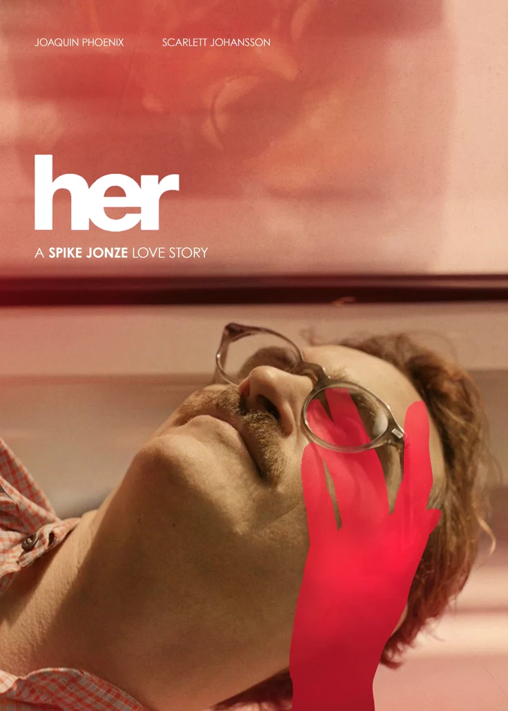
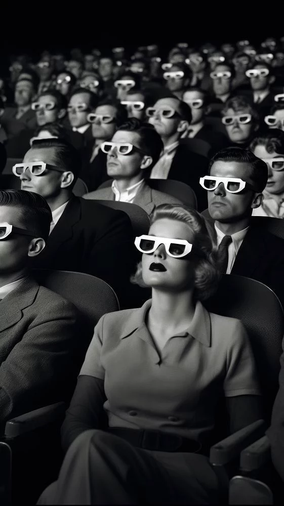
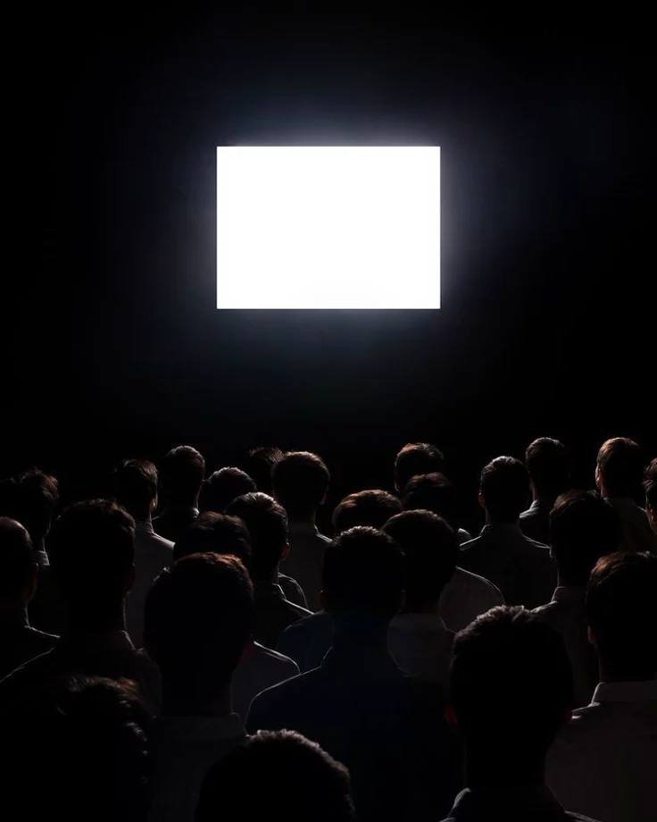
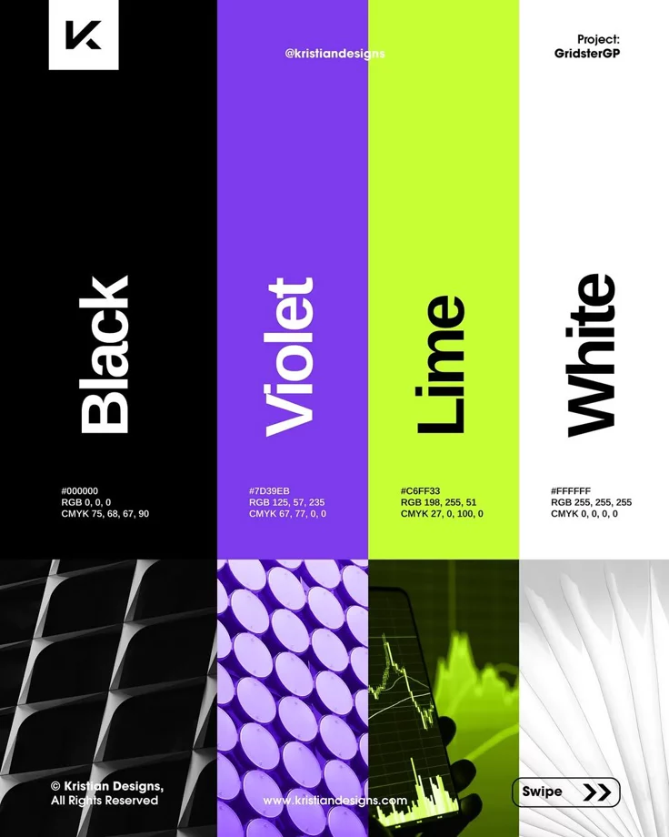
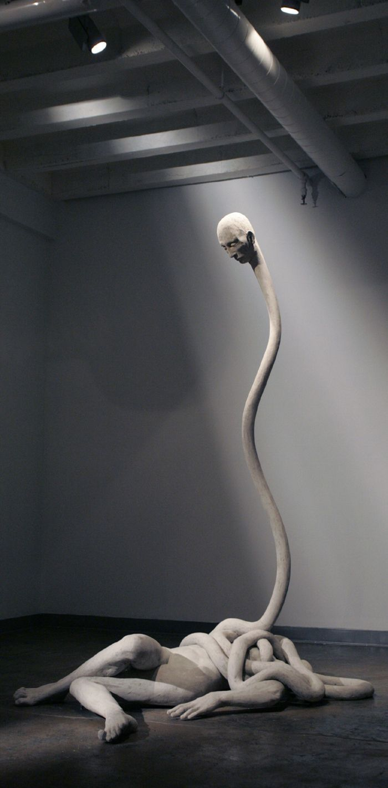

The Four Sides of Our City, The Four Sides of Our Vision
Drawing our name and our ethos from the four distinct compass points of Chicago, we view the city as our laboratory. We are a multidisciplinary collective that bridges the gap between traditional craftsmanship and cutting-edge technology. At Fourside, we believe the most compelling visual identities are not just designed, they are engineered. By blending film, computer graphics, graphic design, and fine art, we create cohesive narratives that resonate across every medium and represent the multifaceted spirit of our home.
Crafting the New Medium
We don't just use industry-standard tools; we build the future of our craft. A core pillar of our practice is the development of in-house, industry-leading creative technology. By merging custom software and experimental tools with traditional painting and design workflows, we push the boundaries of what is visually possible.
Our Studio's Ecosystem

We transform abstract concepts into tangible visual languages, ensuring that every project is as functional as it is aesthetic.
Through our Systems of Identity, we do not just design logos; we construct foundational visual architectures that define how the world interacts with your brand.
Multidimensional Campaigns orchestrate immersive storytelling experiences, weaving together film, digital, and print to ensure your message hits from every angle. We also specialize in Bespoke Artistic Expression, creating one-of-a-kind art pieces that merge our signature technical experimentation with traditional fine art sensibilities. Our focus on Technological Architecture allows us to solve complex design hurdles by building custom tools and pipelines, giving your projects a creative edge that cannot be replicated by standard software.
What We Offer
- Film Production — narrative, documentary, and experimental work
- Brand Identity — visual systems built for longevity
- Fine Art — original works for commercial and gallery contexts
- Open-Source Software — creative tools built by artists, for artists
The most compelling work comes from the collision of disciplines, not the isolation of them.
FourSides is headquartered in Chicago, IL, and takes on projects locally and nationally.
Featured Work Areas

Narrative Film
Story-driven productions built around strong visual language and intentional cinematography.

Documentary
Long-form documentary work that captures truth without sacrificing craft.

Experimental Film
Projects that push the boundaries of what film can communicate and how it can be made.

Brand Identity
Visual systems designed for longevity, built on a foundation of rigorous research and logic.

Fine Art
Original works that sit at the intersection of studio practice and commercial application.

Open-Source Software
Creative tools built in-house and released freely so any artist can use, study, and improve them.